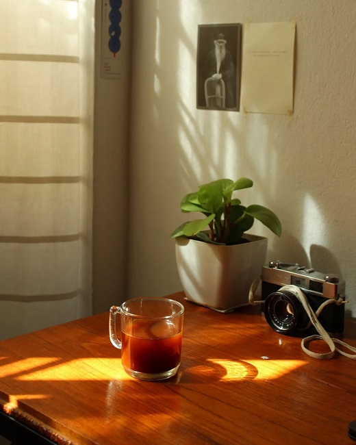

Hacer café ya no es lo mismo, una experiencia en cuarentena
Vinter comenzó a gestarse el invierno pasado, durante la cuarentena, donde tuvimos la experiencia de estar en casa días enteros. Somos un programador y un doctorando en filosofía, que en esos días aprendimos a disfrutar el café de una manera diferente a lo habitual.
Café para comenzar la mañana, para volver a sentarnos frente a la compu a la tarde, o para acompañar las lecturas de la noche. Entonces nos dimos cuenta que los actos cotidianos no tienen sólo un valor práctico; también tienen un fuerte valor estético, que hace que esas actividades se emancipen de su resultado y tengan peso por si mismas. Hacer un café entonces no es solamente preparar una bebida que nos gusta, sino un momento en el cual disfrutamos de los objetos, los movimientos, apreciamos la luz que entra por la ventana y se topa con la cafetera, atraviesa el vidrio de la jarra, vuelve más bello el café ya preparado. Ese tiempo extraño nos mostró que unx tiene que poder disfrutar de las actividades que realiza sin remitirse a la estructura "medios-fines". Tiene que volver algunas actividades pequeños rituales, y la estética (cuando no se vuelve frivolidad) acompaña esa revalorización.
A partir de todo esto empezamos a pensar en un proyecto-tienda que hoy toma forma aquí, en el que no sólo queremos ofrecer cafeteras y accesorios, sino también entusiasmar a otrxs con nuestro descubrimiento: hacer un café ya no es lo mismo.
